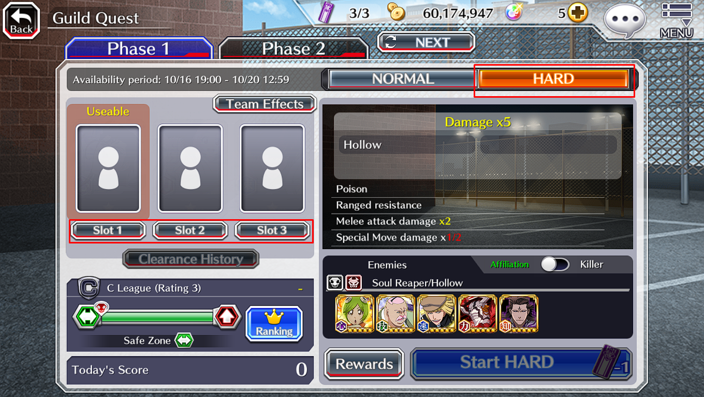

Guild Quest
Guia básico para você concluir o modo mais próximo do competitivo do jogo

Antes de tudo, quero explicar que esse guia visa unicamente o modo Hard da Guild Quest, portanto, não faremos orientações para o modo normal, pois consideramos que este não tenha muita dificuldade, pois com os personagens atuais no jogo, já conseguem completá-las quase sem esforço algum. Mas, caso insistam tanto assim na difuculdade normal, basta seguir o modo Hard que iremos abordar, pois seguindo esses passos, conseguirão concluir com ainda mais facilidade.
Primeira Etapa
Para termos noção de como devemos iniciar na Guild Quest Hard, devemos primeiro se familiarizar com algumas funções principais na tela. É importante prestar bastante atenção nessa parte.
Slot 1:
No Slot 1, devemos colocar o nosso personagem principal. O mais indicado para essa ocasião são os personagens voltados para Strong Attacks, conhecidos como "Chars SAD ou SP" (Strong Attack Damage; Spiritual Pressure). Além do mais, esses personagens terão o papel fundamental de dano massivo e controle de campo, portanto é sempre bom avaliar qual personagem se encaixa melhor de main para cada semana de GQ.
Slot 2 e 3:
Visando a forma mais básica e prática possível, nesses dois slots, é recomendado colocar dois personagens voltados para Normal Attack, conhecidos comos "Chars NAD" (Normal Attack Damage). Esses personagens terão o papel de aplicar danos de forma contínua e assim, garantido estabilidade de ataques